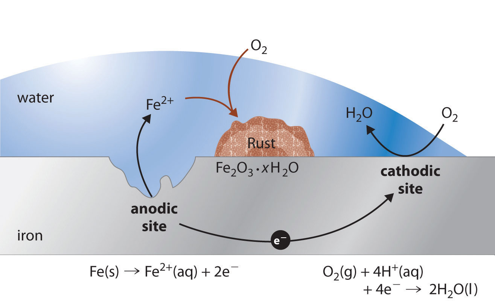
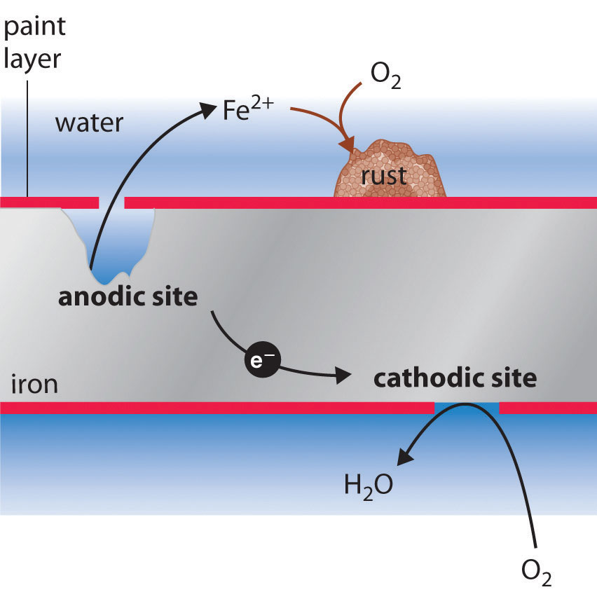
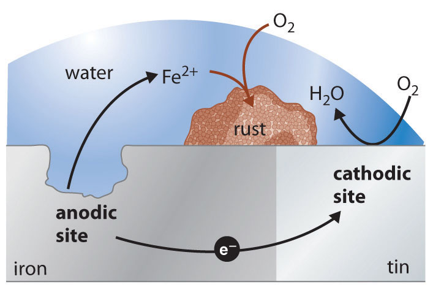

CorrosionA galvanic process by which metals deteriorate through oxidation—usually but not always to their oxides. is a galvanic process by which metals deteriorate through oxidation—usually but not always to their oxides. For example, when exposed to air, iron rusts, silver tarnishes, and copper and brass acquire a bluish-green surface called a patina. Of the various metals subject to corrosion, iron is by far the most important commercially. An estimated $100 billion per year is spent in the United States alone to replace iron-containing objects destroyed by corrosion. Consequently, the development of methods for protecting metal surfaces from corrosion constitutes a very active area of industrial research. In this section, we describe some of the chemical and electrochemical processes responsible for corrosion. We also examine the chemical basis for some common methods for preventing corrosion and treating corroded metals.
Corrosion is a galvanic process.
Under ambient conditions, the oxidation of most metals is thermodynamically spontaneous, with the notable exception of gold and platinum. Hence it is actually somewhat surprising that any metals are useful at all in Earth’s moist, oxygen-rich atmosphere. Some metals, however, are resistant to corrosion for kinetic reasons. For example, aluminum in soft-drink cans and airplanes is protected by a thin coating of metal oxide that forms on the surface of the metal and acts as an impenetrable barrier that prevents further destruction. Aluminum cans also have a thin plastic layer to prevent reaction of the oxide with acid in the soft drink. Chromium, magnesium, and nickel also form protective oxide films. Stainless steels are remarkably resistant to corrosion because they usually contain a significant proportion of chromium, nickel, or both.
In contrast to these metals, when iron corrodes, it forms a red-brown hydrated metal oxide (Fe2O3·xH2O), commonly known as rust, that does not provide a tight protective film (Figure 19.17 "Rust, the Result of Corrosion of Metallic Iron"). Instead, the rust continually flakes off to expose a fresh metal surface vulnerable to reaction with oxygen and water. Because both oxygen and water are required for rust to form, an iron nail immersed in deoxygenated water will not rust—even over a period of several weeks. Similarly, a nail immersed in an organic solvent such as kerosene or mineral oil saturated with oxygen will not rust because of the absence of water.
Figure 19.17 Rust, the Result of Corrosion of Metallic Iron
Iron is oxidized to Fe2+(aq) at an anodic site on the surface of the iron, which is often an impurity or a lattice defect. Oxygen is reduced to water at a different site on the surface of the iron, which acts as the cathode. Electrons are transferred from the anode to the cathode through the electrically conductive metal. Water is a solvent for the Fe2+ that is produced initially and acts as a salt bridge. Rust (Fe2O3·xH2O) is formed by the subsequent oxidation of Fe2+ by atmospheric oxygen.
In the corrosion process, iron metal acts as the anode in a galvanic cell and is oxidized to Fe2+; oxygen is reduced to water at the cathode. The relevant reactions are as follows:
Equation 19.96
Equation 19.97
Equation 19.98
The Fe2+ ions produced in the initial reaction are then oxidized by atmospheric oxygen to produce the insoluble hydrated oxide containing Fe3+, as represented in the following equation:
Equation 19.99
4Fe2+(aq) + O2(g) + (2 + 4x)H2O → 2Fe2O3·xH2O + 4H+(aq)The sign and magnitude of E° for the corrosion process (Equation 19.98) indicate that there is a strong driving force for the oxidation of iron by O2 under standard conditions (1 M H+). Under neutral conditions, the driving force is somewhat less but still appreciable (E = 1.25 V at pH 7.0). Normally, the reaction of atmospheric CO2 with water to form H+ and HCO3− provides a low enough pH to enhance the reaction rate, as does acid rain. (For more information on acid rain, see Chapter 4 "Reactions in Aqueous Solution", Section 4.7 "The Chemistry of Acid Rain".) Automobile manufacturers spend a great deal of time and money developing paints that adhere tightly to the car’s metal surface to prevent oxygenated water, acid, and salt from coming into contact with the underlying metal. Unfortunately, even the best paint is subject to scratching or denting, and the electrochemical nature of the corrosion process means that two scratches relatively remote from each other can operate together as anode and cathode, leading to sudden mechanical failure (Figure 19.18 "Small Scratches in a Protective Paint Coating Can Lead to the Rapid Corrosion of Iron").
Figure 19.18 Small Scratches in a Protective Paint Coating Can Lead to the Rapid Corrosion of Iron
Holes in a protective coating allow oxygen to be reduced at the surface with the greater exposure to air (the cathode), while metallic iron is oxidized to Fe2+(aq) at the less exposed site (the anode). Rust is formed when Fe2+(aq) diffuses to a location where it can react with atmospheric oxygen, which is often remote from the anode. The electrochemical interaction between cathodic and anodic sites can cause a large pit to form under a painted surface, eventually resulting in sudden failure with little visible warning that corrosion has occurred.
One of the most common techniques used to prevent the corrosion of iron is applying a protective coating of another metal that is more difficult to oxidize. Faucets and some external parts of automobiles, for example, are often coated with a thin layer of chromium using an electrolytic process that will be discussed in Section 19.7 "Electrolysis". With the increased use of polymeric materials in cars, however, the use of chrome-plated steel has diminished in recent years. Similarly, the “tin cans” that hold soups and other foods are actually made of steel coated with a thin layer of tin. Neither chromium nor tin is intrinsically resistant to corrosion, but both form protective oxide coatings.
As with a protective paint, scratching a protective metal coating will allow corrosion to occur. In this case, however, the presence of the second metal can actually increase the rate of corrosion. The values of the standard electrode potentials for Sn2+ (E° = −0.14 V) and Fe2+ (E° = −0.45 V) in Table 19.2 "Standard Potentials for Selected Reduction Half-Reactions at 25°C" show that Fe is more easily oxidized than Sn. As a result, the more corrosion-resistant metal (in this case, tin) accelerates the corrosion of iron by acting as the cathode and providing a large surface area for the reduction of oxygen (Figure 19.19 "Galvanic Corrosion"). This process is seen in some older homes where copper and iron pipes have been directly connected to each other. The less easily oxidized copper acts as the cathode, causing iron to dissolve rapidly near the connection and occasionally resulting in a catastrophic plumbing failure.
Figure 19.19 Galvanic Corrosion
If iron is in contact with a more corrosion-resistant metal such as tin, copper, or lead, the other metal can act as a large cathode that greatly increases the rate of reduction of oxygen. Because the reduction of oxygen is coupled to the oxidation of iron, this can result in a dramatic increase in the rate at which iron is oxidized at the anode. Galvanic corrosion is likely to occur whenever two dissimilar metals are connected directly, allowing electrons to be transferred from one to the other.
One way to avoid these problems is to use a more easily oxidized metal to protect iron from corrosion. In this approach, called cathodic protection, a more reactive metal such as Zn (E° = −0.76 V for Zn2+ + 2e− → Zn) becomes the anode, and iron becomes the cathode. This prevents oxidation of the iron and protects the iron object from corrosion. The reactions that occur under these conditions are as follows:
Equation 19.100
cathode: O2(g) + 4e− + 4H+(aq) → 2H2O(l)Equation 19.101
anode: Zn(s) → Zn2+(aq) + 2e−Equation 19.102
The more reactive metal reacts with oxygen and will eventually dissolve, “sacrificing” itself to protect the iron object. Cathodic protection is the principle underlying galvanized steel, which is steel protected by a thin layer of zinc. Galvanized steel is used in objects ranging from nails to garbage cans. In a similar strategy, sacrificial electrodesAn electrode containing a more reactive metal that is attached to a metal object to inhibit that object’s corrosion. using magnesium, for example, are used to protect underground tanks or pipes (Figure 19.20 "The Use of a Sacrificial Electrode to Protect Against Corrosion"). Replacing the sacrificial electrodes is more cost-effective than replacing the iron objects they are protecting.
Figure 19.20 The Use of a Sacrificial Electrode to Protect Against Corrosion

Connecting a magnesium rod to an underground steel pipeline protects the pipeline from corrosion. Because magnesium (E° = −2.37 V) is much more easily oxidized than iron (E° = −0.45 V), the Mg rod acts as the anode in a galvanic cell. The pipeline is therefore forced to act as the cathode at which oxygen is reduced. The soil between the anode and the cathode acts as a salt bridge that completes the electrical circuit and maintains electrical neutrality. As Mg(s) is oxidized to Mg2+ at the anode, anions in the soil, such as nitrate, diffuse toward the anode to neutralize the positive charge. Simultaneously, cations in the soil, such as H+ or NH4+, diffuse toward the cathode, where they replenish the protons that are consumed as oxygen is reduced. A similar strategy uses many miles of somewhat less reactive zinc wire to protect the Alaska oil pipeline.
Suppose an old wooden sailboat, held together with iron screws, has a bronze propeller (recall that bronze is an alloy of copper containing about 7%–10% tin).
Given: identity of metals
Asked for: corrosion reaction, E°cell, and preventive measures
Strategy:
A Write the reactions that occur at the anode and the cathode. From these, write the overall cell reaction and calculate E°cell.
B Based on the relative redox activity of various substances, suggest possible preventive measures.
Solution:
A According to Table 19.2 "Standard Potentials for Selected Reduction Half-Reactions at 25°C", both copper and tin are less active metals than iron (i.e., they have higher positive values of E° than iron). Thus if tin or copper is brought into electrical contact by seawater with iron in the presence of oxygen, corrosion will occur. We therefore anticipate that the bronze propeller will act as the cathode at which O2 is reduced, and the iron screws will act as anodes at which iron dissolves:
Over time, the iron screws will dissolve, and the boat will fall apart.
Exercise
Suppose the water pipes leading into your house are made of lead, while the rest of the plumbing in your house is iron. To eliminate the possibility of lead poisoning, you call a plumber to replace the lead pipes. He quotes you a very low price if he can use up his existing supply of copper pipe to do the job.
Answer:
The deterioration of metals through oxidation is a galvanic process called corrosion. Protective coatings consist of a second metal that is more difficult to oxidize than the metal being protected. Alternatively, a more easily oxidized metal can be applied to a metal surface, thus providing cathodic protection of the surface. A thin layer of zinc protects galvanized steel. Sacrificial electrodes can also be attached to an object to protect it.
Do you expect a bent nail to corrode more or less rapidly than a straight nail? Why?
What does it mean when a metal is described as being coated with a sacrificial layer? Is this different from galvanic protection?
Why is it important for automobile manufacturers to apply paint to the metal surface of a car? Why is this process particularly important for vehicles in northern climates, where salt is used on icy roads?
Paint keeps oxygen and water from coming into direct contact with the metal, which prevents corrosion. Paint is more necessary because salt is an electrolyte that increases the conductivity of water and facilitates the flow of electric current between anodic and cathodic sites.